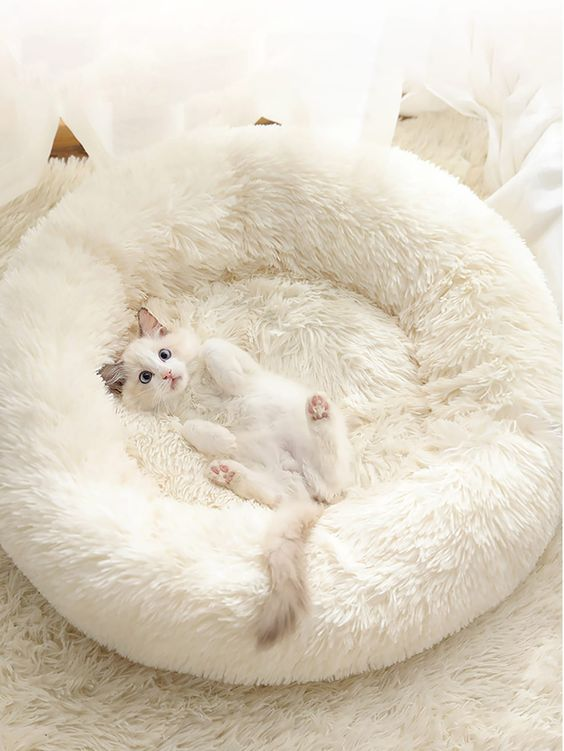
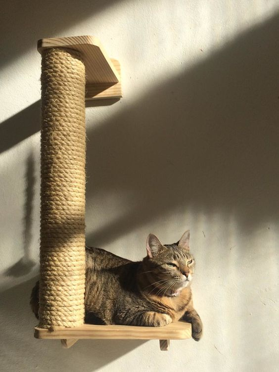

Cama para gatos
Los gatos no requieren camas súper caras y maravillosas para dormir a gusto. Tan solo requieren que ésta sea de un tamaño suficiente para ellos, que esté colocada en un lugar de la casa cálido y tranquilo, y que esté limpia y fuera de aromas extraños.
No obstante comprobarás que luego duerme en casi cualquier sitio calentito, pero es importante que tenga un lugar al que retirarse cuando quiera tener paz y buscar un pequeño retiro. Más que una cama buenísima, busca un emplazamiento buenísimo.

Bandeja para gatos
Éste será el lugar elegido por tu mascota para realizar sus necesidades cotidianas. Antes de nada recordad que éstos son muy sensibles con los olores, por lo que es muy importante que la higiene de la bandeja de arena se limpie casi diariamente. Quita las heces en cuanto las veas y cambia la arena una vez a la semana lavando la bandeja con jabón sin aromas.

Rascador para gatos
¿Quieres que tu gato no utilice tus cortinas como rascador para sus uñas? En ese caso hazte sin falta con un rascador para gatos. Aclarar que rascar sus uñas no es algo que hagan para fastidiar o únicamente para jugar. Los gatos necesitan de forma natural desgastar sus uñas y rascarlas para mantenerlas “preparadas para la caza”.
